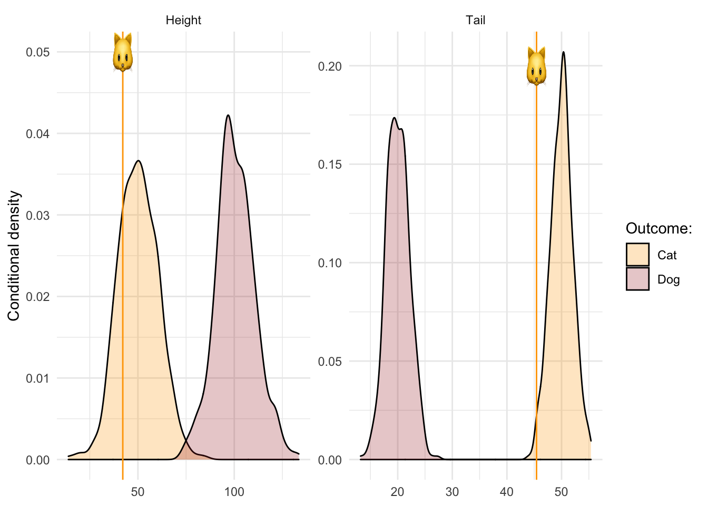
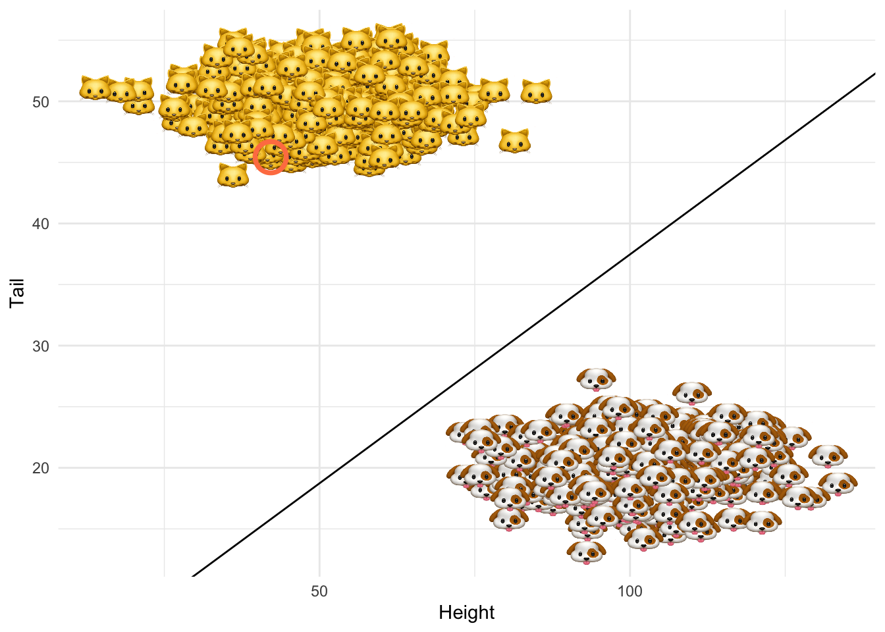
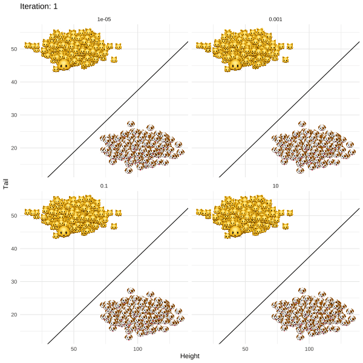

Individual recourse for Black Box Models
Explained through a tale of 🐱’s and 🐶’s

“You cannot appeal to [algorithms]. They do not listen. Nor do they bend.”
— Cathy O’Neil
In her popular book Weapons of Math Destruction Cathy O’Neil presents the example of public school teacher Sarah Wysocki, who lost her job after a teacher evaluation algorithm had rendered her redundant (O’neil 2016). Sarah was highly popular among her peers, supervisors and students.
This post looks at a novel algorithmic solution to the problem that individuals like Sarah, who are faced with an undesirable outcome, should be provided with means to revise that outcome. The literature commonly refers to this as individual recourse. One of the first approaches towards individual recourse was proposed by Ustun, Spangher, and Liu (2019). In a recent follow-up paper, Joshi et al. (2019) propose a methodology coined REVISE, which extends the earlier approach in at least three key ways:
REVISEprovides a framework that avoids suggesting an unrealistic set of changes by imposing a threshold likelihood on the revised attributes.- It is applicable to a broader class of models including Black Box classifiers and structural causal models.
- It can be used to detect poorly defined proxies and biases.
For a detailed discussion of these points you may check out this slide deck or consult the paper directly (freely available on DeepAI). Here, we will abstract from some of these complications and instead look at an application of a slightly simplified version of REVISE. This should help us to first build a good intuition. Readers interested in the technicalities and code may find all of this in the annex below.
From 🐱 to 🐶
We will explain REVISE through a short tale of cats and dogs. The protagonist of this tale is Kitty 🐱, a young cat that identifies as a dog. Unfortunately, Kitty is not very tall and her tail, though short for a cat, is longer than that of the average dog (Figure 1).

Much to her dismay, Kitty has been recognized as a cat by a linear classifier \(g_n(X)\) that we trained through stochastic gradient descent using the data on animals’ height and tail length. Once again interested readers may find technical details and code in the annex below. Figure 2 shows the resulting linear separation in the attribute space with the decision boundary in solid black and Kitty’s location indicated by a red circle. Can we provide individual recourse to Kitty?

Let’s see if and how we can apply REVISE to Kitty’s problem. The following summary should give you some flavour of how the algorithm works:
- Initialize \(\mathbf{x}_i'^{(0)}\), that is the attributes that will be revised recursively. Kitty’s original attributes seem like a reasonable place to start.
- Through gradient descent recursively revise \(\mathbf{x}_i'^{(t)}\) until \(g_n(\mathbf{x}_i'^{(T)})=\)🐶. At this point \(T\) the descent terminates since for these revised attributes the classifier labels Kitty as a dog.
- Return \(\delta_i=\mathbf{x}_i'^{(T)}-\mathbf{x}_i\), that is the individual recourse for Kitty.
Figure 3 illustrates what happens when this approach is applied to Kitty’s problem. The different panels show the results for different values of a regularization parameter \(\lambda\) that governs the trade-off between achieving the desired label switch and keeping the distance between the original (\(\mathbf{x}_i\)) and revised (\(\mathbf{x}_i'\)) attributes small. In all but one case, REVISE converges: a decrease in tail length along with an increase in height eventually allows Kitty to cross the decision boundary. In other words, we have successfully turned Kitty into a dog - at least in the eyes of the linear classifier!
We also observe that as we increase \(\lambda\) for a fixed learning rate, REVISE takes longer to converge. This should come as no surprise, since higher values of \(\lambda\) lead to greater regularization with respect to the penalty we place on the distance that Kitty has to travel. When we penalize too much (\(\lambda=10\)), Kitty never reaches the decision boundary, because she is reluctant to change her characteristics beyond a certain point. While not visible to the naked eye, in this particular example \(\lambda=0.001\) corresponds to the best choice among the candidate values.

Discussion
While hopefully Kitty’s journey has provided you with some useful intuition, the story is of course very silly. Even if your cat ever seems to signal that she wants to be a dog, helping her cross that decision boundary will be tricky. Some attributes are simply immutable or very difficult to change, which Joshi et al. (2019) do not fail to account for in their framework. Their proposed methodology offers a simple and ingenious approach towards providing individual recourse. Instead of concerning ourselves with Black Box interpretability, why not simply provide remedy in case things go wrong?
To some extent that idea has its merit. As this post has hopefully shown, REVISE is straight-forward to understand and readily applicable. It could be a very useful tool to provide individual recourse in many real-world applications. As the implementation of our simplified version of REVISE demonstrates, researchers should also find it relatively easy to develop the methodology further and tailor it to specific use cases. The simpler version here, for example, may be useful in settings where the dimensionality is relatively small and one can reasonably model the distribution of attributes without the need for generative models.
Still, you may be wondering: if the original classifier is based on poorly defined rules and proxies, then what good does REVISE really do? Going back to the example of high-school teacher Sarah Wysocki, one of the key attributes determining teachers’ evaluations was their students’ performance. Realizing this, some teachers took the shortest route to success by artificially inflating their students’ test scores. That same course of action may well have been suggested by REVISE. As Joshi et al. (2019) demonstrate, this very property of REVISE may actually proof useful in detecting weaknesses of decision making systems before setting them loose (key contribution 3).
Nonetheless, the example above also demonstrates that approaches like REVISE, useful as they may be, tend to provide solutions for very particular problems. In reality data-driven decision making systems are often subject to many different problems and hence research on trustworthy AI will need to tackle the issue from various angles. A few places to start include the question of dealing with data that is inherently biased, improving ad-hoc and post-hoc model interpretability and continuing efforts around causality-inspired AI.
References
Annex
In my blog posts I aim to implement interesting ideas from scratch even if that sometimes means that things need to undergo some sort of simplification. The benefit of this approach is that the experience is educationally rewarding - both for myself and hopefully also for readers. The first two sections of this annex show how REVISE and linear classification can be implemented in R. The final section just shows how the synthetic data was generated. To also inspect the code that generates the visualizations and everything else, you can find the source code of this file on GitHub.
Linear classifier
Linear classification is implemented through stochastic gradient descent (SGD) with Hinge loss
\[ \begin{aligned} && \ell(-\mathbf{w}^T\mathbf{x}_i y_i)&=(1-\mathbf{w}^T\mathbf{x}_i y_i)_+ \\ \end{aligned} \]
where \(\mathbf{w}\) is a coefficient vector, \(\mathbf{x}_i\) is the attribute vector of individual \(i\) and \(y_i\) is the individual’s outcome. Since we apply SGD in order to minimize the loss function \(\ell\) by varying \(\mathbf{w}\), we need an expression for its gradient with respect to \(\mathbf{w}\), which is given by:
\[ \begin{equation} \begin{aligned} && \nabla_{\mathbf{W}} \left( \ell(-\mathbf{w}^T\mathbf{x}_i y_i) \right) &= \begin{cases} -\mathbf{x}_i y_i & \text{if} \ \ \ \mathbf{w}^T\mathbf{x}_i y_i \le 1\\ 0 & \text{otherwise} \end{cases} \\ \end{aligned} \end{equation} \tag{1}\]
The code below uses this analytical solution to perform SGD over \(T\) iterations or as long as updates yield feasible parameter values. As the final vector of coefficients the function returns \(\mathbf{\bar{w}}= \frac{1}{T} \sum_{t=1}^{T} \mathbf{w}_t\). Denoting the optimal coefficient vector as \(\mathbf{w}^*\), it can be shown that under certain conditions \(\ell(\mathbf{\bar{w}})\rightarrow\ell(\mathbf{w}^*)\) as \(T\rightarrow\infty\).
REVISE (simplified)
As flagged above, we are looking at a slightly simplified version of the algorithm presented in Joshi et al. (2019). In particular, the approach here does not incorporate the threshold on the likelihood nor does it account for immutable attributes.
Let \(y\in\{-1,1\}\) be a binary outcome variable, \(X\in\mathbb{R}^d\) a feature matrix containing individuals’ attributes and \(g_n(X)\) a corresponding data-dependent classifier. Suppose \(y_i=-1\) (the negative outcome) for some individual characterized by attributes \(\mathbf{x}_i\). Then we want to find \(\mathbf{x}_i'\) closest to \(\mathbf{x}_i\) such that the classifier assigns the positive outcome \(g(\mathbf{x}_i^{'})=1\). In order to do so, we use gradient descent with Hinge loss \(\ell\) to minimize the following function
\[ \begin{aligned} && \min_{\mathbf{x}_i^{'}}& \ \ell(g_n(\mathbf{x}_i^{'}),1) + \lambda d(\mathbf{x}_i^{'},\mathbf{x}_i) \\ \end{aligned} \]
where \(d=||\mathbf{x}_i^{'}-\mathbf{x}_i||\) denotes the Euclidean distance. Note that this time we take the coefficient vector defining \(g_n\) as given and instead vary the attributes. In particular, we will perform gradient descent steps as follows
\[ \begin{aligned} && {\mathbf{x}_i^{'}}^t&\leftarrow {\mathbf{x}_i^{'}}^{t-1} + \eta \nabla_{{\mathbf{x}_i^{'}}} \left( \ell(g_n(\mathbf{x}_i^{'}),1) + \lambda d(\mathbf{x}_i^{'},\mathbf{x}_i) \right) \\ \end{aligned} \]
where \(\eta\) is the learning rate. The descent step is almost equivalent to the one described in Joshi et al. (2019), but here we greatly simplify things by optimizing directly in the attribute space instead of a latent space. The gradient of the loss function looks very similar to Equation 1. With respect to the Euclidean distance partial derivatives are of the following form:
\[ \begin{aligned} && \frac{\partial ||\mathbf{x}_i^{'}-\mathbf{x}_i||}{\partial {x_i'}^{(d)}} &= \frac{{x_i'}^{(d)}-{x_i}^{(d)}}{||\mathbf{x}_i^{'}-\mathbf{x}_i||} \\ \end{aligned} \]
The code that implements this optimization follows below.
Simulated data
The synthetic data describing cats and dogs was generated as follows:
Show the code
sim_data <- function(n=100,averages,noise=0.1) {
d <- ncol(averages)
y <- 2*(rbinom(n,1,0.5)-0.5) # generate binary outcome: 1=dog, -1=cat
X <- as.matrix(averages[(y+1)/2+1,]) # generate attributes conditional on y
dogs <- y==1 # boolean index for dogs
cats <- y==-1 # boolean index for cats
X[cats,] <- X[cats,] +
matrix(rnorm(sum(cats)*d),nrow=sum(cats)) %*% diag(noise*averages[2,]) # add noise for y=1 (cats)
X[dogs,] <- X[dogs,] +
matrix(rnorm(sum(dogs)*d),nrow=sum(dogs)) %*% diag(noise*averages[2,]) # add noise for y=1 (dogs)
return(list(X=X,y=y))
}Citation
@online{altmeyer2021,
author = {Patrick Altmeyer},
title = {Individual Recourse for {Black} {Box} {Models}},
date = {2021-04-27},
langid = {en}
}